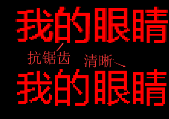

| 命令名称 | Draw_Text 绘图文字 |
| 命令功能 | 在内部的图像数据上进行打字文本内容 |
| 语法格式 | TURING.Draw_Text(x, y, Text, Mode, R, G, B) |
| 参数说明 |
x：整数型，X坐标 y：整数型，Y坐标 Text：字符串型，打字文本内容 Mode：字符串型，可选，样式，默认："宋体|9|0|0"（格式：字体|字号|模式<0正常，1粗体，2斜体，4下划线，8删除线。其他依次叠加数字>|精度<0抗锯齿，1清晰>） R：整数型，可选，默认255，10进制红色分量值 G：整数型，可选，默认0，10进制绿色分量值 B：整数型，可选，默认0，10进制蓝色分量值 |
| 返回值 | 无 |
| 按键精灵 |
复制代码
'创建空白画布 Call TURING.Draw_CreateCanvas(200, 80) '画布上打字 Call TURING.Draw_Text(30, 30, "我的眼睛--图灵识别") '显示获取的图像 Call TURING.Pixel_Preview() |
| 绘图效果 |  |